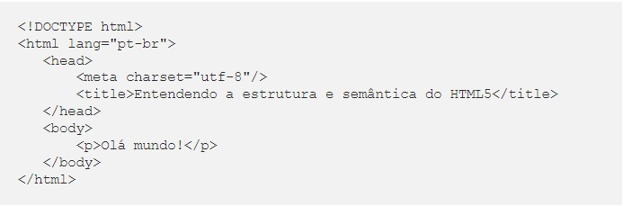
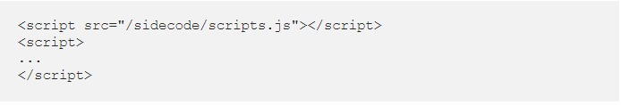
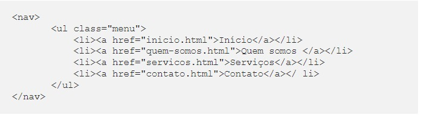
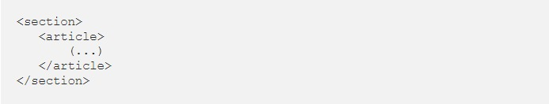
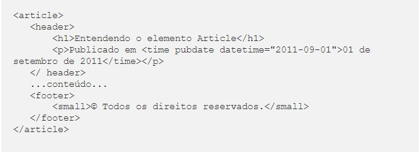
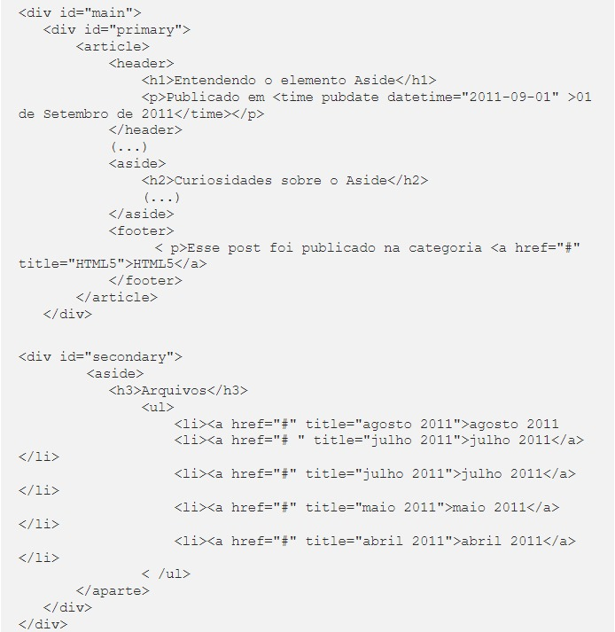

HTML5: Estrutura e a semântica
Estrutura básica do HTML5: Doctype e Metadados
O Document Type Definição (DTD, ou simplesmente Doctype ) é uma instrução que o navegador qualifica para a especificação do código que está sendo usado no documento e deve ser escrito antes da tag ""
Na tag "html" é onde declaramos o idioma principal do documento, através do atributo (que pode ser usado também em outras tags do documento).
Metadados
Os Metadados são um conjunto de informações a respeito da página e do conteúdo publicado. Essas informações são
usadas pelos navegadores e user-agents em geral,
sendo invisíveis para os usuários.
Todos os Metadados mantidos na tag "head":
Informações como Título e Descrição por exemplo, são usados pelos mecanismos de busca para montar uma SERP ( Search Engine Results Page ).
Links
Com a tag "link" podemos referenciar documentos que serão usados em nossa página. O atributo rel indica o tipo de documento que está sendo referenciado, como por exemplo o rel=”stylesheet” fazendo referência à folha de estilo CSS usado para formatar a página.
Scripts
Quando estamos usando scripts em nossas páginas, estamos usando o tipo de linguagem usando o atributo
No HTML5, o tipo de atributo passa a ser opcional, pois o Javascript é um idioma padrão de scripts usados na Web:
Conjunto de caracteres
metatag Charset
As novas marcações do HTML5
Em todas as divisões da Web existem referências aos tipos de conteúdo que são selecionados em todas as páginas da
Web, rodapé ou menu de navegação.
Nas versões anteriores do HTML não havia tags com uma semântica apropriada para cada uma dessas divisões. Dessa
forma, os desenvolvedores acabavam usando uma tag "div" para todos os seus próprios padrões de nomenclaturas
através dos atributos id ou class .
No HTML5 foram criadas diversas tags semânticas para indicar aos usuários-agentes quais conteúdos estão sendo
inseridos em cada uma das divisões da página, organizando e padronizando o desenvolvimento.

Cabeçalho com o elemento - header
O novo elemento header do HTML5 é usado para definir o cabeçalho de uma página ou seção, e pode conter logo, títulos, menu de navegação, campo de busca, etc.
Navegação Global com o elemento nav
O novo elemento "nav" do HTML5 serve para agrupar uma lista de links para outras partes do site, seja essa lista de navegação local ou global. Esses blocos de links podem estar em diferentes partes do layout, como no cabeçalho ou no rodapé.
Diferentes seções com o elemento section
O novo elemento "section" do HTML5 é o menos específico entre as novas tags. A diferença do "section" para um "div" é que o primeiro serve para dividir o conteúdo em diferentes seções, que pode conter elementos como "header" ou "article", enquanto o segundo divide qualquer conteúdo, sem uma finalidade específica.
O conteúdo central com o elemento article
O novo elemento article do HTML5 serve para identificar um conteúdo independente e de maior distribuição dentro da página, que pode ser distribuído via feed, como um post, artigo ou bloco de comentários. O elemento article pode conter outros elementos como header ou footer.
Conteúdos relacionados com o elemento aside
O novo elemento
Rodapé com o elemento footer
O elemento footer do HTML5 representa o rodapé de um documento ou de uma seção específica do mesmo, podendo conter referências ao autor e aos direitos autorais, blocos de navegação ou links relacionados.